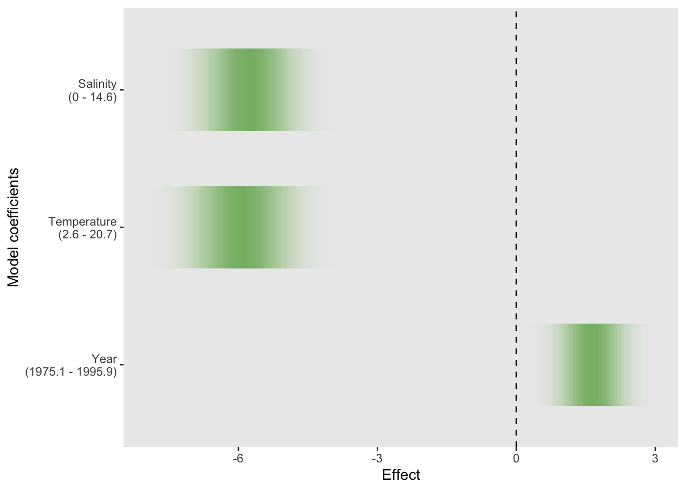

1.7 Confidence intervals
Armed with an estimate \(\hat{\beta}_j\) of the parameter \(\beta_j\), plus a standard error \(s.e.(\hat{\beta}_j)\), a 95% confidence interval for \(\beta_j\) can be constructed as \[ (\hat{\beta}_j \pm 2 \ s.e.(\hat{\beta}_j)) \mbox{ or } (\hat{\beta}_j \pm t_{n-(p+1); 0.975} \ s.e.(\hat{\beta}_j)). \] where \(df\) denotes the degrees of freedom, namely the numbers of parameters, of the model. The confidence interval on the left is a rather rough and ready, approximate one, using two standard errors. The interval on the right provides a more accurate version, where \(t(n-df; 0.975)\) denotes the upper percentile of the \(t_{n-df}\) distribution beyond which lies probability \(0.025\). A confidence interval can be interpreted informally as a range of plausible values for the true, but unknown, parameter.
The confint function in `R is a useful way of producing confidence intervals. Here is a 95% confidence interval for the coefficient of temperature.
## 2.5 % 97.5 %
## Temperature -0.4003724 -0.2540049Confidence intervals are of immediate use because hypotheses of interest can often be formulated as simple statements about parameters. For example, if variables \(x_j\) is unrelated to the mean value of \(y\) then this corresponds to \(\beta_j = 0\). If a confidence interval for \(\beta_j\) does not contain the value \(0\) then there is convincing evidence that the term involving \(\beta_j\) does contribute to the model. However, if the confidence interval does contain the value \(0\) then we would have justification for removing this term from the model.
A more graphical approach can be adopted through the uncertainty strips discussed previously. In order to make the effect of each model term comparable, instead of considering each coefficient \(\beta_j\) we can consider \(\beta_j r_j\), where \(r_j\) denotes the range of the covariate \(x_j\). This gives an estimate of the change in the mean response across the span of the observed covariate values. This allows the effects of the covariates to be compared on a common scale. The ‘rpanel’ package provide the ‘rp.regression’ function which implements this, although we need to ensure that the covariate details are available by fitting the model with an additional argument ‘x = TRUE’. Note that the uncertainty strips used here have a common maximum intensity, as this makes it easier to assess the ‘extremity’ of values of interest for distributions which are very diffuse.
library(rpanel)
model <- lm(DO ~ Year + Temperature + Salinity, x = TRUE, data = clyde.sub)
rp.regression(model)